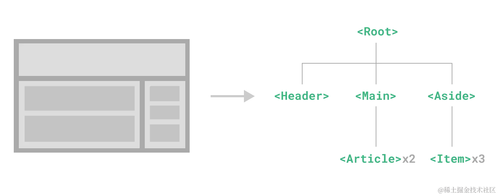
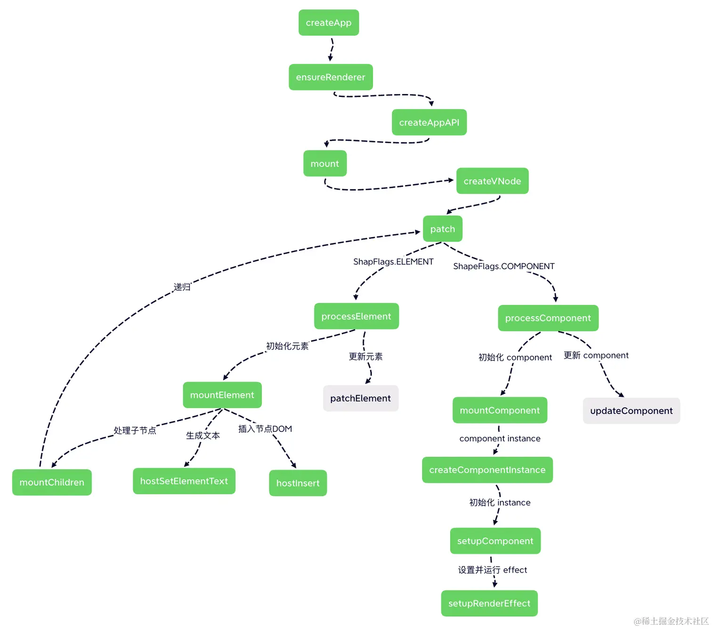
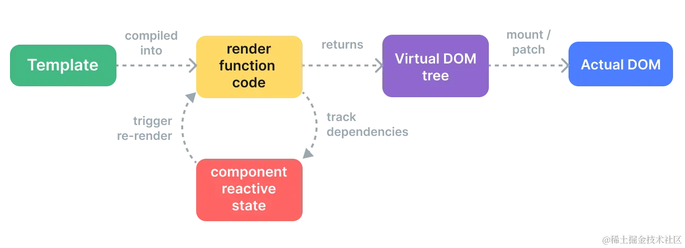

相对于传统的 jQuery 一把梭子撸到底的开发模式，组件化可以帮助我们实现 视图 和 逻辑 的复用，并且可以对每个部分进行单独的思考。对于一个大型的 Vue.js 应用，通常是由一个个组件组合而成：

但是我们实际访问的页面，是由 DOM 元素构成的，而组件的 <template> 中的内容只是一个模板字符串而已。那模板字符串是如何被渲染成 DOM 的呢？接下来我们将从组件入手，揭秘 Vue 的组件是如何被渲染成真实的 DOM 的。
在开始本章节之前，我们先来简单初始化一个 Vue 3 的应用：
shell复制代码# 安装 vue cli
$ yarn global add @vue/cli
# 创建 vue3 的基础脚手架 一路回车
$ vue create vue3-demo
接下来，打开项目，可以看到Vue.js 的入口文件 main.js 的内容如下：
js复制代码import { createApp } from 'vue'
import App from './App.vue'
createApp(App).mount('#app')
这里就有一个根组件 App.vue。为了更加简单地介绍 Vue 根组件的渲染过程，我把 App.vue 根组件进行了一个简单的修改：
html复制代码<template>
<div class="helloWorld">
hello world
</div>
</template>
<script>
export default {
setup() {
// ...
}
}
</script>
我们知道 .vue 类型的文件无法在 Web 端直接加载，我们通常会在 webpack 的编译阶段，通过 vue-loader 编译生成组件相关的 JavaScript 和 CSS，并把 template 部分编译转换成 render 函数添加到组件对象的属性中。
上述的 App.vue 文件内的模板其实是会被编译工具在编译时转成一个渲染函数，大致如下：
js复制代码import { openBlock as _openBlock, createElementBlock as _createElementBlock } from "vue"
const _hoisted_1 = { class: "helloWorld" }
export function render(_ctx, _cache, $props, $setup, $data, $options) {
return (_openBlock(), _createElementBlock("div", _hoisted_1, " hello world "))
}
关于 <template> 中的模板字符串是如何被编译成 render 函数的，以及 _hoisted_1 是个什么玩意，我们将在后续章节中详细介绍。
现在我们只需要知道 <script> 中的对象内容最终会和编译后的模板内容一起，生成一个 App 对象传入 createApp 函数中：
js复制代码{
render(_ctx, _cache, $props, $setup, $data, $options) {
// ...
},
setup() {
// ...
}
}
接着回到 main.js 的入口文件，整个初始化的过程只剩下如下部分了：
js复制代码createApp(App).mount('#app')
打开源码，可以看一下 createApp 的过程：
js复制代码// packages/runtime-dom/src/index.ts
export const createApp = (...args) => {
const app = ensureRenderer().createApp(...args);
// ...
return app;
};
猜测一下，ensureRenderer().createApp(...args) 这个链式函数执行完成后肯定返回了 mount 函数，ensureRenderer 就是构造了一个带有 createApp 函数的渲染器 renderer 对象 ：
js复制代码// packages/runtime-dom/src/index.ts
function ensureRenderer() {
// 如果 renderer 有值的话，那么以后都不会初始化了
return (
renderer ||
(renderer = createRenderer(rendererOptions)
)
}
// renderOptions 包含以下函数：
const renderOptions = {
createElement,
createText,
setText,
setElementText,
patchProp,
insert,
remove,
}
这里返回的 renderer 对象，可以认为是一个跨平台的渲染器对象，针对不同的平台，会创建出不同的 renderer 对象，上述是创建浏览器环境的 renderer 对象，对于服务端渲染的场景，则会创建 server render 的 renderer:
js复制代码// packages/runtime-dom/src/index.ts
let enabledHydration = false
function ensureHydrationRenderer() {
renderer = enabledHydration
? renderer
: createHydrationRenderer(rendererOptions)
enabledHydration = true
return renderer
}
再来看一下 createRenderer 返回的对象：
js复制代码// packages/runtime-core/src/renderer.ts
export function createRenderer(options) {
// ...
// 这里不介绍 hydrate 模式
return {
render,
hydrate,
createApp: createAppAPI(render, hydrate),
}
}
可以看到，renderer 对象上包含了 createApp 和 render 方法。再来看一下 createApp 方法：
js复制代码// packages/runtime-core/src/apiCreateApp.ts
function createAppAPI(render, hydrate) {
// createApp createApp 方法接收的两个参数：根组件的对象和 prop
return function createApp(rootComponent, rootProps = null) {
const app = {
// ... 省略很多不需要在这里介绍的属性
_component: rootComponent,
_props: rootProps,
mount(rootContainer, isHydrate, isSVG) {
// ...
}
}
return app
}
}
直到这里，我们才真正拨开了 Vue 3 初始化根组件的核心方法，也就是入口文件 createApp 真正执行的内容就是这里的 createAppAPI 函数中的 createApp 函数，该函数接收了 <App /> 组件作为根组件 rootComponent，返回了一个包含 mount 方法的 app 对象。
接下来再深入地看一下 mount 的内部实现：
js复制代码// packages/runtime-core/src/apiCreateApp.ts
mount(rootContainer, isHydrate, isSVG) {
if (!isMounted) {
// ... 省略部分不重要的代码
// 1. 创建根组件的 vnode
const vnode = createVNode(
rootComponent,
rootProps
)
// 2. 渲染根组件
render(vnode, rootContainer, isSVG)
isMounted = true
}
}
什么是 vnode 节点呢？其实它和 Virtual DOM 是一个意思，就是将真实的 DOM 以普通对象形式的数据结构来表达，简化了很多 DOM 中内容。
熟悉 JS DOM 编程的小伙伴都知道 JS 直接操作 DOM 往往会带来许多性能负担，所以 vnode 提供了对真实 DOM 上的一层虚拟映射，我们只需要操作这个虚拟的数据结构，那些真正费性能的活交给这些框架来操作就好了，框架会帮我们做很多性能优化的事情。这也是 vnode 带来的最大的优势之一。
其次，因为 vnode 只是一种与平台无关的数据结构而已，所以理论上我们也可以将它渲染到不同平台上从而达到跨平台渲染的目的。这个也是 weex、mpvue 等跨端渲染框架的核心基础。
上述例子中的 template 中的内容用 vnode 可以表示为：
js复制代码const vnode = {
type: 'div',
props: {
'class': 'helloWorld'
},
children: 'helloWorld'
}
说了这么多，那么根节点是如何被创建成一个 vnode 的呢？核心也就在 createVNode 函数中：
typescript复制代码// packages/runtime-core/src/vnode.ts
function createBaseVNode(...) {
const vnode = {
type,
props,
key: props && normalizeKey(props),
children,
component: null,
shapeFlag,
patchFlag,
dynamicProps,
dynamicChildren: null,
// ... 一些其他属性
}
// ...
return vnode
}
function createVNode(type, props = null, children = null) {
if (props) {
// 如果存在 props 则需要对 props 进行一些处理，这里先省略
}
// ...
// 处理 shapeFlag 类型
const shapeFlag = isString(type)
? ShapeFlags.ELEMENT
: __FEATURE_SUSPENSE__ && isSuspense(type)
? ShapeFlags.SUSPENSE
: isTeleport(type)
? ShapeFlags.TELEPORT
: isObject(type)
? ShapeFlags.STATEFUL_COMPONENT
: isFunction(type)
? ShapeFlags.FUNCTIONAL_COMPONENT
: 0
// ...
return createBaseVNode(
type,
props,
children,
patchFlag,
dynamicProps,
shapeFlag,
isBlockNode,
true
)
}
当进行根组件渲染的时候，createVNode 的第一个入参 type 是我们的 App 对象，也就是一个 Object，所以得到的 shapeFlag 的值是 STATEFUL_COMPONENT，代表的是一个有状态组件对象。（这里顺便提一下，如果传入的是个函数，那么就是一个函数式组件 FUNCTIONAL_COMPONENT，函数式组件和有状态的对象组件都是 Vue 可处理的组件类型，这个会在下面渲染阶段提及。）
到这里，Vue 完成了对根组件的 Vnode 对象的创建，接下来要做的就是将该组件渲染到页面中。
回到 mount 函数中，接下来一步就是对 vnode 的渲染工作，核心代码：
js复制代码render(vnode, rootContainer);
那么这里的 render 函数是什么呢？通过上面的代码我们发现，其实它是在调用 createAppAPI 时传入进来的，而 createAppAPI 则是在创建 renderer 渲染器的时候调用的。那么，接下来看看 render 函数的实现：
js复制代码// packages/runtime-core/src/renderer.ts
const render = (vnode, container) => {
if (vnode == null) {
// 如果 vnode 不存在，表示需要卸载组件
if (container._vnode) {
unmount(container._vnode, null, null, true)
}
} else {
// 否则进入更新流程（初始化创建也是特殊的一种更新）
patch(container._vnode || null, vnode, container)
}
// 缓存 vnode
container._vnode = vnode
}
很明显，对于初始化根组件的过程中，传入了一个根组件的 vnode 对象，所以这里会执行 patch 相关的动作。patch 本意是补丁的意思，可以理解成为更新做一些补丁的活儿，其实初始的过程也可以看作是一个全量补丁，一种特殊的更新操作。
js复制代码// packages/runtime-core/src/renderer.ts
function patch(n1,n2,container = null,anchor = null,parentComponent = null) {
// 对于类型不同的新老节点，直接进行卸载
if (n1 && !isSameVNodeType(n1, n2)) {
anchor = getNextHostNode(n1)
unmount(n1, parentComponent, parentSuspense, true)
n1 = null
}
// 基于 n2 的类型来判断
// 因为 n2 是新的 vnode
const { type, shapeFlag } = n2;
switch (type) {
case Text:
// 处理文本节点
break;
// 其中还有几个类型比如： static fragment comment
default:
// 这里就基于 shapeFlag 来处理
if (shapeFlag & ShapeFlags.ELEMENT) {
// 处理普通 DOM 元素
processElement(n1, n2, container, anchor, parentComponent);
} else if (shapeFlag & ShapeFlags.COMPONENT) {
// 处理 component
processComponent(n1, n2, container, parentComponent);
} else if {
// ... 处理其他元素
}
}
}
patch 函数主要接收的参数说明如下：
n1 表示老的 vnode 节点；n2 表示新的 vnode 节点；container 表示需要挂载的 dom 容器；anchor 挂载的参考元素；parentComponent 父组件。这里我们主要关注前 3 个参数，因为是初始化的过程，所以 n1 本次值为空，核心看 n2 的值，n2 有一个 type 和 shapeFlag。当前 n2 的 type 是 App 组件对象，所以逻辑会进入 Switch 的 default 中。再比较 shapeFlag 属性，前面提到 shapeFlag 的值是 STATEFUL_COMPONENT。
这里需要注意的是
ShapeFlags是一个二进制左移操作符生成的对象，其中
ShapeFlags.COMPONENT = ShapeFlags.STATEFUL_COMPONENT | ShapeFlags.FUNCTIONAL_COMPONENT， 所以shapeFlag & ShapeFlags.COMPONENT这里的值是true，关于二进制左移操作符对象在Vue 3中会大量使用，后面也会详细介绍。
接着也就进入了 processComponent 的逻辑了：
js复制代码// packages/runtime-core/src/renderer.ts
function processComponent(n1, n2, container, parentComponent) {
// 如果 n1 没有值的话，那么就是 mount
if (!n1) {
// 初始化 component
mountComponent(n2, container, parentComponent);
} else {
updateComponent(n1, n2, container);
}
}
同理，这里我们只看初始化的逻辑，所以 n1 此时还是个空值，那么就会进入 mountComponent 函数对组件进行初始挂载过程。
js复制代码// packages/runtime-core/src/renderer.ts
function mountComponent(initialVNode, container, parentComponent) {
// 1. 先创建一个 component instance
const instance = (initialVNode.component = createComponentInstance(
initialVNode,
parentComponent
));
// 2. 初始化 instance 上的 props, slots, 执行组件的 setup 函数...
setupComponent(instance);
// 3. 设置并运行带副作用的渲染函数
setupRenderEffect(instance, initialVNode, container);
}
该函数实现过程还是非常清晰的，思考一下，一个组件的初始化要做哪些内容呢？
其实很容易想到，我们需要一个实例化的组件对象，该对象可以在 Vue 执行的运行时上下文中随时获取到，另外还需要对实例化后的组件中的属性做一些优化、处理、赋值等操作，最后，就是把组件实例的 render 函数执行一遍。
上面也是 mountComponent 核心做的事情，我们一个个来看。
第一步是组件实例化，在 Vue 3 中通过 createComponentInstance 的方法创建组件实例，返回的是一个组件实例的对象，大致包含以下属性：
js复制代码// packages/runtime-core/src/component.ts
const instance = {
// 这里是组件对象
type: vnode.type,
// 组件 vnode
vnode,
// 新的组件 vnode
next: null,
// props 相关
props: {},
// 指向父组件
parent,
// 依赖注入相关
provides: parent ? parent.provides : {},
// 渲染上下文代理
proxy: null,
// 标记是否被挂载
isMounted: false,
// attrs 相关
attrs: {},
// slots 相关
slots: {},
// context 相关
ctx: {},
// setup return 的状态数据
setupState: {},
// ...
};
上述实例属性，相对源码而言，已经省略了很多内容了，这些属性现在看着肯定不知所云，头皮发麻。但相应的属性是 vue 在特定的场景和功能下才会用到的，相信你跟着本小册一起阅读后，回过头来再去看一遍这些属性，就会“顿悟”。
然后是对实例化后的组件中的属性做一些优化、处理、赋值等操作，这里主要是初始化了 props、slots，并执行组件的 setup 函数，核心的实现和功能我们将在下一节介绍。
js复制代码// packages/runtime-core/src/component.ts
export function setupComponent(instance) {
// 1. 处理 props
// 取出存在 vnode 里面的 props
const { props, children } = instance.vnode;
initProps(instance, props);
// 2. 处理 slots
initSlots(instance, children);
// 3. 调用 setup 并处理 setupResult
setupStatefulComponent(instance);
}
最后是把组件实例的 render 函数执行一遍，这里是通过 setupRenderEffect 来执行的。我们再看一下这个函数的实现：
js复制代码// packages/runtime-core/src/renderer.ts
const setupRenderEffect = (instance, initialVNode, container, anchor, parentSuspense, isSVG, optimized) => {
function componentUpdateFn() {
if (!instance.isMounted) {
// 渲染子树的 vnode
const subTree = (instance.subTree = renderComponentRoot(instance))
// 挂载子树 vnode 到 container 中
patch(null, subTree, container, anchor, instance, parentSuspense, isSVG)
// 把渲染生成的子树根 DOM 节点存储到 el 属性上
initialVNode.el = subTree.el
instance.isMounted = true
}
else {
// 更新相关，后面介绍
}
}
// 创建副作用渲染函数
instance.update = effect(componentUpdateFn, prodEffectOptions)
}
这里我们再看一下 componentUpdateFn 这个函数，核心是调用了 renderComponentRoot 来生成 subTree，然后再把 subTree 挂载到 container 中。其实 renderComponentRoot 的核心工作就是执行 instance.render 方法，该方法前面我们已经说了，组件在编译时会生成组件对象，包含了 render 函数，该函数内部是一系列的渲染函数的执行：
js复制代码import { openBlock, createElementBlock } from "vue"
const _hoisted_1 = { class: "helloWorld" }
export function render(...) {
return (openBlock(), createElementBlock("div", _hoisted_1, " hello world "))
}
那么只需要看一下 createElementBlock 函数的实现：
js复制代码// packages/runtime-core/src/vnode.ts
export const createElementBlock = (...) => {
return setupBlock(
createBaseVNode(
type,
props,
children,
patchFlag,
dynamicProps,
shapeFlag,
true /* isBlock */
)
)
};
可以看到本质还是调用了 createBaseVNode 创新 vnode。所以，我们可以推导出 subtree 就是调用 render 函数而生产的 vnode 节点。这里需要注意的一点是，因为 subtree 调用的 createBaseVNode 创建时，传入的 type = div 在这里是个 string，所以返回的 shapeFlags 的值是 ELEMENT。
渲染生成子树 vnode 后，接下来就是继续调用 patch 函数把子树 vnode 挂载到 container 中了，前面说过了 patch 的实现，再来简单看一下当传入的 vnode 的 shapeFlags 是个 ELEMENT 时，会调用 processElement 这个函数：
js复制代码if (shapeFlag & ShapeFlags.ELEMENT) {
processElement(n1, n2, container, anchor, parentComponent);
}
我们来看一下 processElement 的实现：
js复制代码// packages/runtime-core/src/renderer.ts
function processElement(n1, n2, container, anchor, parentComponent) {
if (!n1) {
// 挂载元素节点
mountElement(n2, container, anchor);
} else {
// 更新元素节点
updateElement(n1, n2, container, anchor, parentComponent);
}
}
因为在初始化的过程中，n1 是 null，所以这里执行的是 mountElement 进行元素的初始化挂载。
js复制代码// packages/runtime-core/src/renderer.ts
const mountElement = (vnode, container, anchor, parentComponent, parentSuspense, isSVG, optimized) => {
let el
const { type, props, shapeFlag, transition, patchFlag, dirs } = vnode
// ...
// 根据 vnode 创建 DOM 节点
el = vnode.el = hostCreateElement(vnode.type, isSVG, props && props.is)
if (props) {
// 处理 props 属性
for (const key in props) {
if (!isReservedProp(key)) {
hostPatchProp(el, key, null, props[key], isSVG)
}
}
}
// 文本节点处理
if (shapeFlag & ShapeFlags.TEXT_CHILDREN) {
hostSetElementText(el, vnode.children)
} else if (shapeFlag & ShapeFlags.ARRAY_CHILDREN) {
// 如果节点是个数据类型，则递归子节点
mountChildren(vnode.children, el)
}
// 把创建好的 el 元素挂载到容器中
hostInsert(el, container, anchor)
}
mountElemet 首先是通过 hostCreateElement 创建了一个 DOM 节点，然后处理一下 props 属性，接着根据 shapeFlag 判断子节点的类型，如果节点是个文本节点，则直接创建文本节点，如果子节点是个数组，比如这种情况：
js复制代码return (openBlock(), createElementBlock("div", _hoisted_1, [
hoisted_2,
createVNode(_component_Hello)
]))
对于这种子节点是数组的情况时，它的 shapeFlag 将是一个数组类型 ARRAY_CHILDREN。此时会对该 vnode 节点的子节点调用 mountChildren 进行递归的 patch 渲染。
最后，处理完所有子节点后，通过 hostInsert 方法把缓存在内存中的 DOM el 映射渲染到真实的 DOM Container 当中。
js复制代码// packages/runtime-dom/src/nodeOps.ts
insert: (child, parent, anchor) {
parent.insertBefore(child, anchor || null)
}
到这里，我们已经完成了从入口文件开始，分析根组件如何挂载渲染到真实 DOM 的流程，再简单通过一张流程图回顾一下上述内容，绿色部分是初始化的过程，也是本小节的内容，灰色部分我们后面章节再做介绍。

然后我们再引用一下 Vue 官网上的一张渲染流程图：

现在再来看这一张图，整体流程就会清晰了很多：在组件初始化挂载阶段，模板被编译成渲染函数的形式，交由渲染器执行，渲染器执行渲染函数得到 APP 组件对象的子树 vnode，子树 vnode 进行递归 patch 后生成不同类型的 DOM 节点，最后把这些 DOM 节点挂载到页面的 container 当中。
关于具体的编译器和更新以及响应式的部分我们会在后续章节继续介绍。本节主要介绍了挂载过程，后面的小节我们接着介绍一下更新策略。